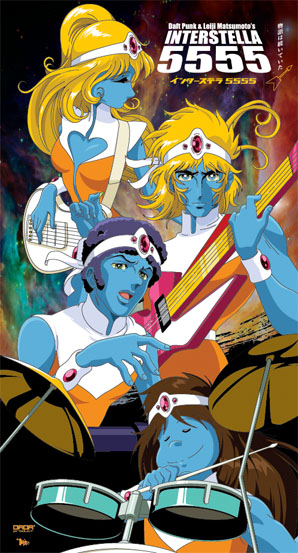

The Concert
AAug.1st, 2018: Daft Punk meets The Crescendolls at Nippon Budokan!

What if Daft Punk collaborates with the most popular alien band in Japan?. It's been 15 years since Interstella 5555 was released, but Daft Punk and The Crescendolls are back and finally scheduled to perform together for the first time at Japan's most prestigious musical venue, Nippon Budokan, in August 2018!.
This collaboration would be an unforgettable show that cant’t be missed, having a unique experience with the movie and the complete original soundtrack.
People from different parts of the world will be waiting to get a ticket. That’s why will be a waiting list to create a filter for the 14.201 spectators. So don’t loose your time and get to the waiting list and good luck!